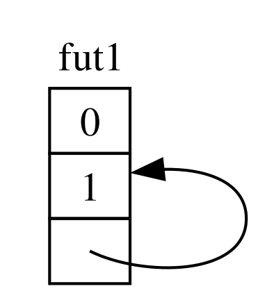
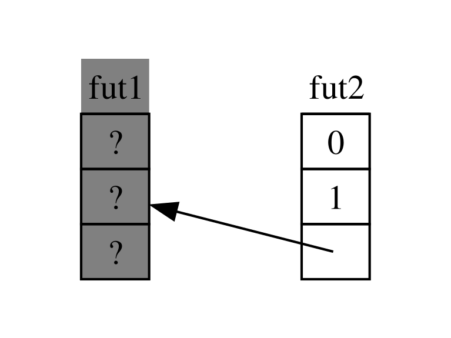
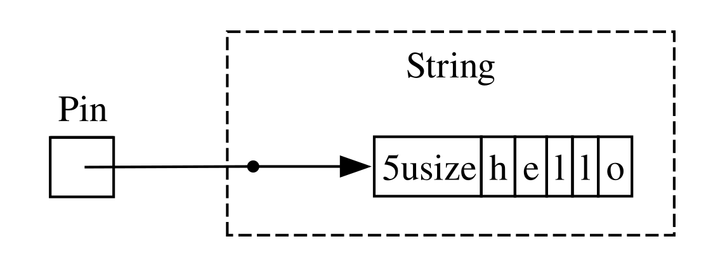

Keep synchronous database calls off the async worker
An async function can suspend at await points, allowing a worker to poll other futures. A synchronous SQLite call does not acquire that property simply by being placed inside async fn. The handler moves blocking work onto Tokio's blocking pool. It first acquires an owned semaphore permit without waiting. Overload therefore gets an immediate 503 instead of an unbounded backlog of blocked operations in this part of the service.
let Ok(slot) = app.slots.try_acquire_owned() else {
return (StatusCode::SERVICE_UNAVAILABLE, "busy").into_response();
};
let task = tokio::task::spawn_blocking(move || {
let _slot = slot;
app.store.submit(&order)
});
Cancellation is the subtle boundary. A caller can stop waiting for a task; a started spawn_blocking closure can still finish its transaction. A timeout from the client is an unknown outcome. Retrying with the same id and payload recovers the answer. Retrying with a fresh id requests another order. For high concurrency against a networked database, evaluate an async driver and connection pool. It changes how waiting consumes threads; transaction and retry semantics still require an explicit design.
Bound the right quantity
A semaphore with four permits bounds the admitted blocking jobs in this process. It says nothing about how many TCP connections the operating system will accept, how many clients are retrying, or how many identical service instances share the file. Those limits live at different levels. If a deployment has three processes each configured with four permits, up to twelve jobs can contend at the storage layer. A bounded local queue also changes the latency distribution: work admitted early may still wait, while later work is rejected immediately. Set deadlines and retry policies with those distinctions in mind, then verify under realistic bursts.
Download the order-intake Cargo project · docs.rs/tokio/1/tokio/task/fn.spawn_blocking.html · docs.rs/sqlx/latest/sqlx/struct.Pool.html
Fundamentals of Asynchronous Programming: Async, Await, Futures, and Streams
Many operations we ask the computer to do can take a while to finish. It would be nice if we could do something else while we’re waiting for those long-running processes to complete. Modern computers offer two techniques for working on more than one operation at a time: parallelism and concurrency. Our programs’ logic, however, is written in a mostly linear fashion. We’d like to be able to specify the operations a program should perform and points at which a function could pause and some other part of the program could run instead, without needing to specify up front exactly the order and manner in which each bit of code should run. Asynchronous programming is an abstraction that lets us express our code in terms of potential pausing points and eventual results that takes care of the details of coordination for us.
This chapter builds on Chapter 16’s use of threads for parallelism and
concurrency by introducing an alternative approach to writing code: Rust’s
futures, streams, and the async and await syntax that let us express how
operations could be asynchronous, and the third-party crates that implement
asynchronous runtimes: code that manages and coordinates the execution of
asynchronous operations.
Let’s consider an example. Say you’re exporting a video you’ve created of a family celebration, an operation that could take anywhere from minutes to hours. The video export will use as much CPU and GPU power as it can. If you had only one CPU core and your operating system didn’t pause that export until it completed—that is, if it executed the export synchronously—you couldn’t do anything else on your computer while that task was running. That would be a pretty frustrating experience. Fortunately, your computer’s operating system can, and does, invisibly interrupt the export often enough to let you get other work done simultaneously.
Now say you’re downloading a video shared by someone else, which can also take a while but does not take up as much CPU time. In this case, the CPU has to wait for data to arrive from the network. While you can start reading the data once it starts to arrive, it might take some time for all of it to show up. Even once the data is all present, if the video is quite large, it could take at least a second or two to load it all. That might not sound like much, but it’s a very long time for a modern processor, which can perform billions of operations every second. Again, your operating system will invisibly interrupt your program to allow the CPU to perform other work while waiting for the network call to finish.
The video export is an example of a CPU-bound or compute-bound operation. It’s limited by the computer’s potential data processing speed within the CPU or GPU, and how much of that speed it can dedicate to the operation. The video download is an example of an I/O-bound operation, because it’s limited by the speed of the computer’s input and output; it can only go as fast as the data can be sent across the network.
In both of these examples, the operating system’s invisible interrupts provide a form of concurrency. That concurrency happens only at the level of the entire program, though: the operating system interrupts one program to let other programs get work done. In many cases, because we understand our programs at a much more granular level than the operating system does, we can spot opportunities for concurrency that the operating system can’t see.
For example, if we’re building a tool to manage file downloads, we should be able to write our program so that starting one download won’t lock up the UI, and users should be able to start multiple downloads at the same time. Many operating system APIs for interacting with the network are blocking, though; that is, they block the program’s progress until the data they’re processing is completely ready.
Note: This is how most function calls work, if you think about it. However, the term blocking is usually reserved for function calls that interact with files, the network, or other resources on the computer, because those are the cases where an individual program would benefit from the operation being non-blocking.
We could avoid blocking our main thread by spawning a dedicated thread to download each file. However, the overhead of the system resources used by those threads would eventually become a problem. It would be preferable if the call didn’t block in the first place, and instead we could define a number of tasks that we’d like our program to complete and allow the runtime to choose the best order and manner in which to run them.
That is exactly what Rust’s async (short for asynchronous) abstraction gives us. In this chapter, you’ll learn all about async as we cover the following topics:
- How to use Rust’s
asyncandawaitsyntax and execute asynchronous functions with a runtime - How to use the async model to solve some of the same challenges we looked at in Chapter 16
- How multithreading and async provide complementary solutions that you can combine in many cases
Before we see how async works in practice, though, we need to take a short detour to discuss the differences between parallelism and concurrency.
Parallelism and Concurrency
We’ve treated parallelism and concurrency as mostly interchangeable so far. Now we need to distinguish between them more precisely, because the differences will show up as we start working.
Consider the different ways a team could split up work on a software project. You could assign a single member multiple tasks, assign each member one task, or use a mix of the two approaches.
When an individual works on several different tasks before any of them is complete, this is concurrency. One way to implement concurrency is similar to having two different projects checked out on your computer, and when you get bored or stuck on one project, you switch to the other. You’re just one person, so you can’t make progress on both tasks at the exact same time, but you can multitask, making progress on one at a time by switching between them (see Figure 17-1).

When the team splits up a group of tasks by having each member take one task and work on it alone, this is parallelism. Each person on the team can make progress at the exact same time (see Figure 17-2).

In both of these workflows, you might have to coordinate between different tasks. Maybe you thought the task assigned to one person was totally independent from everyone else’s work, but it actually requires another person on the team to finish their task first. Some of the work could be done in parallel, but some of it was actually serial: it could only happen in a series, one task after the other, as in Figure 17-3.

Likewise, you might realize that one of your own tasks depends on another of your tasks. Now your concurrent work has also become serial.
Parallelism and concurrency can intersect with each other, too. If you learn that a colleague is stuck until you finish one of your tasks, you’ll probably focus all your efforts on that task to “unblock” your colleague. You and your coworker are no longer able to work in parallel, and you’re also no longer able to work concurrently on your own tasks.
The same basic dynamics come into play with software and hardware. On a machine with a single CPU core, the CPU can perform only one operation at a time, but it can still work concurrently. Using tools such as threads, processes, and async, the computer can pause one activity and switch to others before eventually cycling back to that first activity again. On a machine with multiple CPU cores, it can also do work in parallel. One core can be performing one task while another core performs a completely unrelated one, and those operations actually happen at the same time.
Running async code in Rust usually happens concurrently. Depending on the hardware, the operating system, and the async runtime we are using (more on async runtimes shortly), that concurrency may also use parallelism under the hood.
Now, let’s dive into how async programming in Rust actually works.
Futures and the Async Syntax
Futures and the Async Syntax
The key elements of asynchronous programming in Rust are futures and Rust’s
async and await keywords.
A future is a value that may not be ready now but will become ready at some
point in the future. (This same concept shows up in many languages, sometimes
under other names such as task or promise.) Rust provides a Future trait
as a building block so that different async operations can be implemented with
different data structures but with a common interface. In Rust, futures are
types that implement the Future trait. Each future holds its own information
about the progress that has been made and what “ready” means.
You can apply the async keyword to blocks and functions to specify that they
can be interrupted and resumed. Within an async block or async function, you
can use the await keyword to await a future (that is, wait for it to become
ready). Any point where you await a future within an async block or function is
a potential spot for that block or function to pause and resume. The process of
checking with a future to see if its value is available yet is called polling.
Some other languages, such as C# and JavaScript, also use async and await
keywords for async programming. If you’re familiar with those languages, you
may notice some significant differences in how Rust handles the syntax. That’s
for good reason, as we’ll see!
When writing async Rust, we use the async and await keywords most of the
time. Rust compiles them into equivalent code using the Future trait, much as
it compiles for loops into equivalent code using the Iterator trait.
Because Rust provides the Future trait, though, you can also implement it for
your own data types when you need to. Many of the functions we’ll see
throughout this chapter return types with their own implementations of
Future. We’ll return to the definition of the trait at the end of the chapter
and dig into more of how it works, but this is enough detail to keep us moving
forward.
This may all feel a bit abstract, so let’s write our first async program: a little web scraper. We’ll pass in two URLs from the command line, fetch both of them concurrently, and return the result of whichever one finishes first. This example will have a fair bit of new syntax, but don’t worry—we’ll explain everything you need to know as we go.
Our First Async Program
To keep the focus of this chapter on learning async rather than juggling parts
of the ecosystem, we’ve created the trpl crate (trpl is short for “The Rust
Programming Language”). It re-exports all the types, traits, and functions
you’ll need, primarily from the futures and
tokio crates. The futures crate is an official home
for Rust experimentation for async code, and it’s actually where the Future
trait was originally designed. Tokio is the most widely used async runtime in
Rust today, especially for web applications. There are other great runtimes out
there, and they may be more suitable for your purposes. We use the tokio
crate under the hood for trpl because it’s well tested and widely used.
In some cases, trpl also renames or wraps the original APIs to keep you
focused on the details relevant to this chapter. If you want to understand what
the crate does, we encourage you to check out its source code.
You’ll be able to see what crate each re-export comes from, and we’ve left
extensive comments explaining what the crate does.
Create a new binary project named hello-async and add the trpl crate as a
dependency:
$ cargo new hello-async
$ cd hello-async
$ cargo add trpl
Now we can use the various pieces provided by trpl to write our first async
program. We’ll build a little command line tool that fetches two web pages,
pulls the <title> element from each, and prints out the title of whichever
page finishes that whole process first.
Defining the page_title Function
Let’s start by writing a function that takes one page URL as a parameter, makes
a request to it, and returns the text of the <title> element (see Listing
17-1).
extern crate trpl; // required for mdbook test
fn main() {
// TODO: we'll add this next!
}
use trpl::Html;
async fn page_title(url: &str) -> Option<String> {
let response = trpl::get(url).await;
let response_text = response.text().await;
Html::parse(&response_text)
.select_first("title")
.map(|title| title.inner_html())
}First, we define a function named page_title and mark it with the async
keyword. Then we use the trpl::get function to fetch whatever URL is passed
in and add the await keyword to await the response. To get the text of the
response, we call its text method and once again await it with the await
keyword. Both of these steps are asynchronous. For the get function, we have
to wait for the server to send back the first part of its response, which will
include HTTP headers, cookies, and so on and can be delivered separately from
the response body. Especially if the body is very large, it can take some time
for it all to arrive. Because we have to wait for the entirety of the
response to arrive, the text method is also async.
We have to explicitly await both of these futures, because futures in Rust are
lazy: they don’t do anything until you ask them to with the await keyword.
(In fact, Rust will show a compiler warning if you don’t use a future.) This
might remind you of the discussion of iterators in the “Processing a Series of
Items with Iterators” section in Chapter 13.
Iterators do nothing unless you call their next method—whether directly or by
using for loops or methods such as map that use next under the hood.
Likewise, futures do nothing unless you explicitly ask them to. This laziness
allows Rust to avoid running async code until it’s actually needed.
Note: This is different from the behavior we saw when using thread::spawn
in the “Creating a New Thread with spawn”
section in Chapter 16, where the closure we passed to another thread started
running immediately. It’s also different from how many other languages
approach async. But it’s important for Rust to be able to provide its
performance guarantees, just as it is with iterators.
Once we have response_text, we can parse it into an instance of the Html
type using Html::parse. Instead of a raw string, we now have a data type we
can use to work with the HTML as a richer data structure. In particular, we can
use the select_first method to find the first instance of a given CSS
selector. By passing the string "title", we’ll get the first <title>
element in the document, if there is one. Because there may not be any matching
element, select_first returns an Option<ElementRef>. Finally, we use the
Option::map method, which lets us work with the item in the Option if it’s
present, and do nothing if it isn’t. (We could also use a match expression
here, but map is more idiomatic.) In the body of the function we supply to
map, we call inner_html on the title to get its content, which is a
String. When all is said and done, we have an Option<String>.
Notice that Rust’s await keyword goes after the expression you’re awaiting,
not before it. That is, it’s a postfix keyword. This may differ from what
you’re used to if you’ve used async in other languages, but in Rust it makes
chains of methods much nicer to work with. As a result, we could change the
body of page_title to chain the trpl::get and text function calls
together with await between them, as shown in Listing 17-2.
extern crate trpl; // required for mdbook test
use trpl::Html;
fn main() {
// TODO: we'll add this next!
}
async fn page_title(url: &str) -> Option<String> {
let response_text = trpl::get(url).await.text().await;
Html::parse(&response_text)
.select_first("title")
.map(|title| title.inner_html())
}await keywordWith that, we have successfully written our first async function! Before we add
some code in main to call it, let’s talk a little more about what we’ve
written and what it means.
When Rust sees a block marked with the async keyword, it compiles it into a
unique, anonymous data type that implements the Future trait. When Rust sees
a function marked with async, it compiles it into a non-async function
whose body is an async block. An async function’s return type is the type of
the anonymous data type the compiler creates for that async block.
Thus, writing async fn is equivalent to writing a function that returns a
future of the return type. To the compiler, a function definition such as the
async fn page_title in Listing 17-1 is roughly equivalent to a non-async
function defined like this:
#![allow(unused)]
fn main() {
extern crate trpl; // required for mdbook test
use std::future::Future;
use trpl::Html;
fn page_title(url: &str) -> impl Future<Output = Option<String>> {
async move {
let text = trpl::get(url).await.text().await;
Html::parse(&text)
.select_first("title")
.map(|title| title.inner_html())
}
}
}Let’s walk through each part of the transformed version:
- It uses the
impl Traitsyntax we discussed back in Chapter 10 in the “Traits as Parameters” section. - The returned value implements the
Futuretrait with an associated type ofOutput. Notice that theOutputtype isOption<String>, which is the same as the original return type from theasync fnversion ofpage_title. - All of the code called in the body of the original function is wrapped in
an
async moveblock. Remember that blocks are expressions. This whole block is the expression returned from the function. - This async block produces a value with the type
Option<String>, as just described. That value matches theOutputtype in the return type. This is just like other blocks you have seen. - The new function body is an
async moveblock because of how it uses theurlparameter. (We’ll talk much more aboutasyncversusasync movelater in the chapter.)
Now we can call page_title in main.
Executing an Async Function with a Runtime
To start, we’ll get the title for a single page, shown in Listing 17-3. Unfortunately, this code doesn’t compile yet.
extern crate trpl; // required for mdbook test
use trpl::Html;
async fn main() {
let args: Vec<String> = std::env::args().collect();
let url = &args[1];
match page_title(url).await {
Some(title) => println!("The title for {url} was {title}"),
None => println!("{url} had no title"),
}
}
async fn page_title(url: &str) -> Option<String> {
let response_text = trpl::get(url).await.text().await;
Html::parse(&response_text)
.select_first("title")
.map(|title| title.inner_html())
}page_title function from main with a user-supplied argumentWe follow the same pattern we used to get command line arguments in the
“Accepting Command Line Arguments” section in
Chapter 12. Then we pass the URL argument to page_title and await the result.
Because the value produced by the future is an Option<String>, we use a
match expression to print different messages to account for whether the page
had a <title>.
The only place we can use the await keyword is in async functions or blocks,
and Rust won’t let us mark the special main function as async.
error[E0752]: `main` function is not allowed to be `async`
--> src/main.rs:6:1
|
6 | async fn main() {
| ^^^^^^^^^^^^^^^ `main` function is not allowed to be `async`
The reason main can’t be marked async is that async code needs a runtime:
a Rust crate that manages the details of executing asynchronous code. A
program’s main function can initialize a runtime, but it’s not a runtime
itself. (We’ll see more about why this is the case in a bit.) Every Rust
program that executes async code has at least one place where it sets up a
runtime that executes the futures.
Most languages that support async bundle a runtime, but Rust does not. Instead, there are many different async runtimes available, each of which makes different tradeoffs suitable to the use case it targets. For example, a high-throughput web server with many CPU cores and a large amount of RAM has very different needs than a microcontroller with a single core, a small amount of RAM, and no heap allocation ability. The crates that provide those runtimes also often supply async versions of common functionality such as file or network I/O.
Here, and throughout the rest of this chapter, we’ll use the block_on
function from the trpl crate, which takes a future as an argument and blocks
the current thread until this future runs to completion. Behind the scenes,
calling block_on sets up a runtime using the tokio crate that’s used to run
the future passed in (the trpl crate’s block_on behavior is similar to
other runtime crates’ block_on functions). Once the future completes,
block_on returns whatever value the future produced.
We could pass the future returned by page_title directly to block_on and,
once it completed, we could match on the resulting Option<String> as we tried
to do in Listing 17-3. However, for most of the examples in the chapter (and
most async code in the real world), we’ll be doing more than just one async
function call, so instead we’ll pass an async block and explicitly await the
result of the page_title call, as in Listing 17-4.
extern crate trpl; // required for mdbook test
use trpl::Html;
fn main() {
let args: Vec<String> = std::env::args().collect();
trpl::block_on(async {
let url = &args[1];
match page_title(url).await {
Some(title) => println!("The title for {url} was {title}"),
None => println!("{url} had no title"),
}
})
}
async fn page_title(url: &str) -> Option<String> {
let response_text = trpl::get(url).await.text().await;
Html::parse(&response_text)
.select_first("title")
.map(|title| title.inner_html())
}trpl::block_onWhen we run this code, we get the behavior we expected initially:
$ cargo run -- "https://www.rust-lang.org"
Finished `dev` profile [unoptimized + debuginfo] target(s) in 0.05s
Running `target/debug/async_await 'https://www.rust-lang.org'`
The title for https://www.rust-lang.org was
Rust Programming Language
Phew—we finally have some working async code! But before we add the code to race two sites against each other, let’s briefly turn our attention back to how futures work.
Each await point—that is, every place where the code uses the await
keyword—represents a place where control is handed back to the runtime. To make
that work, Rust needs to keep track of the state involved in the async block so
that the runtime could kick off some other work and then come back when it’s
ready to try advancing the first one again. This is an invisible state machine,
as if you’d written an enum like this to save the current state at each await
point:
#![allow(unused)]
fn main() {
extern crate trpl; // required for mdbook test
enum PageTitleFuture<'a> {
Initial { url: &'a str },
GetAwaitPoint { url: &'a str },
TextAwaitPoint { response: trpl::Response },
}
}Writing the code to transition between each state by hand would be tedious and error-prone, however, especially when you need to add more functionality and more states to the code later. Fortunately, the Rust compiler creates and manages the state machine data structures for async code automatically. The normal borrowing and ownership rules around data structures all still apply, and happily, the compiler also handles checking those for us and provides useful error messages. We’ll work through a few of those later in the chapter.
Ultimately, something has to execute this state machine, and that something is a runtime. (This is why you may come across mentions of executors when looking into runtimes: an executor is the part of a runtime responsible for executing the async code.)
Now you can see why the compiler stopped us from making main itself an async
function back in Listing 17-3. If main were an async function, something else
would need to manage the state machine for whatever future main returned, but
main is the starting point for the program! Instead, we called the
trpl::block_on function in main to set up a runtime and run the future
returned by the async block until it’s done.
Note: Some runtimes provide macros so you can write an async main
function. Those macros rewrite async fn main() { ... } to be a normal fn main, which does the same thing we did by hand in Listing 17-4: call a
function that runs a future to completion the way trpl::block_on does.
Now let’s put these pieces together and see how we can write concurrent code.
Racing Two URLs Against Each Other Concurrently
In Listing 17-5, we call page_title with two different URLs passed in from the
command line and race them by selecting whichever future finishes first.
extern crate trpl; // required for mdbook test
use trpl::{Either, Html};
fn main() {
let args: Vec<String> = std::env::args().collect();
trpl::block_on(async {
let title_fut_1 = page_title(&args[1]);
let title_fut_2 = page_title(&args[2]);
let (url, maybe_title) =
match trpl::select(title_fut_1, title_fut_2).await {
Either::Left(left) => left,
Either::Right(right) => right,
};
println!("{url} returned first");
match maybe_title {
Some(title) => println!("Its page title was: '{title}'"),
None => println!("It had no title."),
}
})
}
async fn page_title(url: &str) -> (&str, Option<String>) {
let response_text = trpl::get(url).await.text().await;
let title = Html::parse(&response_text)
.select_first("title")
.map(|title| title.inner_html());
(url, title)
}page_title for two URLs to see which returns firstWe begin by calling page_title for each of the user-supplied URLs. We save
the resulting futures as title_fut_1 and title_fut_2. Remember, these don’t
do anything yet, because futures are lazy and we haven’t yet awaited them. Then
we pass the futures to trpl::select, which returns a value to indicate which
of the futures passed to it finishes first.
Note: Under the hood, trpl::select is built on a more general select
function defined in the futures crate. The futures crate’s select
function can do a lot of things that the trpl::select function can’t, but
it also has some additional complexity that we can skip over for now.
Either future can legitimately “win,” so it doesn’t make sense to return a
Result. Instead, trpl::select returns a type we haven’t seen before,
trpl::Either. The Either type is somewhat similar to a Result in that it
has two cases. Unlike Result, though, there is no notion of success or
failure baked into Either. Instead, it uses Left and Right to indicate
“one or the other”:
#![allow(unused)]
fn main() {
enum Either<A, B> {
Left(A),
Right(B),
}
}The select function returns Left with that future’s output if the first
argument wins, and Right with the second future argument’s output if that
one wins. This matches the order the arguments appear in when calling the
function: the first argument is to the left of the second argument.
We also update page_title to return the same URL passed in. That way, if the
page that returns first does not have a <title> we can resolve, we can still
print a meaningful message. With that information available, we wrap up by
updating our println! output to indicate both which URL finished first and
what, if any, the <title> is for the web page at that URL.
You have built a small working web scraper now! Pick a couple URLs and run the command line tool. You may discover that some sites are consistently faster than others, while in other cases the faster site varies from run to run. More importantly, you’ve learned the basics of working with futures, so now we can dig deeper into what we can do with async.
Applying Concurrency with Async
Applying Concurrency with Async
In this section, we’ll apply async to some of the same concurrency challenges we tackled with threads in Chapter 16. Because we already talked about a lot of the key ideas there, in this section we’ll focus on what’s different between threads and futures.
In many cases, the APIs for working with concurrency using async are very similar to those for using threads. In other cases, they end up being quite different. Even when the APIs look similar between threads and async, they often have different behavior—and they nearly always have different performance characteristics.
Creating a New Task with spawn_task
The first operation we tackled in the “Creating a New Thread with
spawn” section in Chapter 16 was counting up on
two separate threads. Let’s do the same using async. The trpl crate supplies
a spawn_task function that looks very similar to the thread::spawn API, and
a sleep function that is an async version of the thread::sleep API. We can
use these together to implement the counting example, as shown in Listing 17-6.
extern crate trpl; // required for mdbook test
use std::time::Duration;
fn main() {
trpl::block_on(async {
trpl::spawn_task(async {
for i in 1..10 {
println!("hi number {i} from the first task!");
trpl::sleep(Duration::from_millis(500)).await;
}
});
for i in 1..5 {
println!("hi number {i} from the second task!");
trpl::sleep(Duration::from_millis(500)).await;
}
});
}As our starting point, we set up our main function with trpl::block_on so
that our top-level function can be async.
Note: From this point forward in the chapter, every example will include this
exact same wrapping code with trpl::block_on in main, so we’ll often skip it
just as we do with main. Remember to include it in your code!
Then we write two loops within that block, each containing a trpl::sleep
call, which waits for half a second (500 milliseconds) before sending the next
message. We put one loop in the body of a trpl::spawn_task and the other in a
top-level for loop. We also add an await after the sleep calls.
This code behaves similarly to the thread-based implementation—including the fact that you may see the messages appear in a different order in your own terminal when you run it:
hi number 1 from the second task!
hi number 1 from the first task!
hi number 2 from the first task!
hi number 2 from the second task!
hi number 3 from the first task!
hi number 3 from the second task!
hi number 4 from the first task!
hi number 4 from the second task!
hi number 5 from the first task!
This version stops as soon as the for loop in the body of the main async
block finishes, because the task spawned by spawn_task is shut down when the
main function ends. If you want it to run all the way to the task’s
completion, you will need to use a join handle to wait for the first task to
complete. With threads, we used the join method to “block” until the thread
was done running. In Listing 17-7, we can use await to do the same thing,
because the task handle itself is a future. Its Output type is a Result, so
we also unwrap it after awaiting it.
extern crate trpl; // required for mdbook test
use std::time::Duration;
fn main() {
trpl::block_on(async {
let handle = trpl::spawn_task(async {
for i in 1..10 {
println!("hi number {i} from the first task!");
trpl::sleep(Duration::from_millis(500)).await;
}
});
for i in 1..5 {
println!("hi number {i} from the second task!");
trpl::sleep(Duration::from_millis(500)).await;
}
handle.await.unwrap();
});
}await with a join handle to run a task to completionThis updated version runs until both loops finish:
hi number 1 from the second task!
hi number 1 from the first task!
hi number 2 from the first task!
hi number 2 from the second task!
hi number 3 from the first task!
hi number 3 from the second task!
hi number 4 from the first task!
hi number 4 from the second task!
hi number 5 from the first task!
hi number 6 from the first task!
hi number 7 from the first task!
hi number 8 from the first task!
hi number 9 from the first task!
So far, it looks like async and threads give us similar outcomes, just with
different syntax: using await instead of calling join on the join handle,
and awaiting the sleep calls.
The bigger difference is that we didn’t need to spawn another operating system
thread to do this. In fact, we don’t even need to spawn a task here. Because
async blocks compile to anonymous futures, we can put each loop in an async
block and have the runtime run them both to completion using the trpl::join
function.
In the “Waiting for All Threads to Finish”
section in Chapter 16, we showed how to use the join method on the
JoinHandle type returned when you call std::thread::spawn. The trpl::join
function is similar, but for futures. When you give it two futures, it produces
a single new future whose output is a tuple containing the output of each
future you passed in once they both complete. Thus, in Listing 17-8, we use
trpl::join to wait for both fut1 and fut2 to finish. We do not await
fut1 and fut2 but instead the new future produced by trpl::join. We
ignore the output, because it’s just a tuple containing two unit values.
extern crate trpl; // required for mdbook test
use std::time::Duration;
fn main() {
trpl::block_on(async {
let fut1 = async {
for i in 1..10 {
println!("hi number {i} from the first task!");
trpl::sleep(Duration::from_millis(500)).await;
}
};
let fut2 = async {
for i in 1..5 {
println!("hi number {i} from the second task!");
trpl::sleep(Duration::from_millis(500)).await;
}
};
trpl::join(fut1, fut2).await;
});
}trpl::join to await two anonymous futuresWhen we run this, we see both futures run to completion:
hi number 1 from the first task!
hi number 1 from the second task!
hi number 2 from the first task!
hi number 2 from the second task!
hi number 3 from the first task!
hi number 3 from the second task!
hi number 4 from the first task!
hi number 4 from the second task!
hi number 5 from the first task!
hi number 6 from the first task!
hi number 7 from the first task!
hi number 8 from the first task!
hi number 9 from the first task!
Now, you’ll see the exact same order every time, which is very different from
what we saw with threads and with trpl::spawn_task in Listing 17-7. That is
because the trpl::join function is fair, meaning it checks each future
equally often, alternating between them, and never lets one race ahead if the
other is ready. With threads, the operating system decides which thread to
check and how long to let it run. With async Rust, the runtime decides which
task to check. (In practice, the details get complicated because an async
runtime might use operating system threads under the hood as part of how it
manages concurrency, so guaranteeing fairness can be more work for a
runtime—but it’s still possible!) Runtimes don’t have to guarantee fairness for
any given operation, and they often offer different APIs to let you choose
whether or not you want fairness.
Try some of these variations on awaiting the futures and see what they do:
- Remove the async block from around either or both of the loops.
- Await each async block immediately after defining it.
- Wrap only the first loop in an async block, and await the resulting future after the body of second loop.
For an extra challenge, see if you can figure out what the output will be in each case before running the code!
Sending Data Between Two Tasks Using Message Passing
Sharing data between futures will also be familiar: we’ll use message passing again, but this time with async versions of the types and functions. We’ll take a slightly different path than we did in the “Transfer Data Between Threads with Message Passing” section in Chapter 16 to illustrate some of the key differences between thread-based and futures-based concurrency. In Listing 17-9, we’ll begin with just a single async block—not spawning a separate task as we spawned a separate thread.
extern crate trpl; // required for mdbook test
fn main() {
trpl::block_on(async {
let (tx, mut rx) = trpl::channel();
let val = String::from("hi");
tx.send(val).unwrap();
let received = rx.recv().await.unwrap();
println!("received '{received}'");
});
}tx and rxHere, we use trpl::channel, an async version of the multiple-producer,
single-consumer channel API we used with threads back in Chapter 16. The async
version of the API is only a little different from the thread-based version: it
uses a mutable rather than an immutable receiver rx, and its recv method
produces a future we need to await rather than producing the value directly.
Now we can send messages from the sender to the receiver. Notice that we don’t
have to spawn a separate thread or even a task; we merely need to await the
rx.recv call.
The synchronous Receiver::recv method in std::mpsc::channel blocks until it
receives a message. The trpl::Receiver::recv method does not, because it is
async. Instead of blocking, it hands control back to the runtime until either a
message is received or the send side of the channel closes. By contrast, we
don’t await the send call, because it doesn’t block. It doesn’t need to,
because the channel we’re sending it into is unbounded.
Note: Because all of this async code runs in an async block in a
trpl::block_on call, everything within it can avoid blocking. However, the
code outside it will block on the block_on function returning. That’s the
whole point of the trpl::block_on function: it lets you choose where to
block on some set of async code, and thus where to transition between sync
and async code.
Notice two things about this example. First, the message will arrive right away. Second, although we use a future here, there’s no concurrency yet. Everything in the listing happens in sequence, just as it would if there were no futures involved.
Let’s address the first part by sending a series of messages and sleeping in between them, as shown in Listing 17-10.
extern crate trpl; // required for mdbook test
use std::time::Duration;
fn main() {
trpl::block_on(async {
let (tx, mut rx) = trpl::channel();
let vals = vec![
String::from("hi"),
String::from("from"),
String::from("the"),
String::from("future"),
];
for val in vals {
tx.send(val).unwrap();
trpl::sleep(Duration::from_millis(500)).await;
}
while let Some(value) = rx.recv().await {
println!("received '{value}'");
}
});
}await between each messageIn addition to sending the messages, we need to receive them. In this case,
because we know how many messages are coming in, we could do that manually by
calling rx.recv().await four times. In the real world, though, we’ll generally
be waiting on some unknown number of messages, so we need to keep waiting
until we determine that there are no more messages.
In Listing 16-10, we used a for loop to process all the items received from a
synchronous channel. Rust doesn’t yet have a way to use a for loop with an
asynchronously produced series of items, however, so we need to use a loop we
haven’t seen before: the while let conditional loop. This is the loop version
of the if let construct we saw back in the “Concise Control Flow with if let and let...else” section in Chapter 6. The loop
will continue executing as long as the pattern it specifies continues to match
the value.
The rx.recv call produces a future, which we await. The runtime will pause
the future until it is ready. Once a message arrives, the future will resolve
to Some(message) as many times as a message arrives. When the channel closes,
regardless of whether any messages have arrived, the future will instead
resolve to None to indicate that there are no more values and thus we should
stop polling—that is, stop awaiting.
The while let loop pulls all of this together. If the result of calling
rx.recv().await is Some(message), we get access to the message and we can
use it in the loop body, just as we could with if let. If the result is
None, the loop ends. Every time the loop completes, it hits the await point
again, so the runtime pauses it again until another message arrives.
The code now successfully sends and receives all of the messages. Unfortunately, there are still a couple of problems. For one thing, the messages do not arrive at half-second intervals. They arrive all at once, 2 seconds (2,000 milliseconds) after we start the program. For another, this program also never exits! Instead, it waits forever for new messages. You will need to shut it down using ctrl-C.
Code Within One Async Block Executes Linearly
Let’s start by examining why the messages come in all at once after the full
delay, rather than coming in with delays between each one. Within a given async
block, the order in which await keywords appear in the code is also the order
in which they’re executed when the program runs.
There’s only one async block in Listing 17-10, so everything in it runs
linearly. There’s still no concurrency. All the tx.send calls happen,
interspersed with all of the trpl::sleep calls and their associated await
points. Only then does the while let loop get to go through any of the
await points on the recv calls.
To get the behavior we want, where the sleep delay happens between each
message, we need to put the tx and rx operations in their own async blocks,
as shown in Listing 17-11. Then the runtime can execute each of them separately
using trpl::join, just as in Listing 17-8. Once again, we await the result of
calling trpl::join, not the individual futures. If we awaited the individual
futures in sequence, we would just end up back in a sequential flow—exactly
what we’re trying not to do.
extern crate trpl; // required for mdbook test
use std::time::Duration;
fn main() {
trpl::block_on(async {
let (tx, mut rx) = trpl::channel();
let tx_fut = async {
let vals = vec![
String::from("hi"),
String::from("from"),
String::from("the"),
String::from("future"),
];
for val in vals {
tx.send(val).unwrap();
trpl::sleep(Duration::from_millis(500)).await;
}
};
let rx_fut = async {
while let Some(value) = rx.recv().await {
println!("received '{value}'");
}
};
trpl::join(tx_fut, rx_fut).await;
});
}send and recv into their own async blocks and awaiting the futures for those blocksWith the updated code in Listing 17-11, the messages get printed at 500-millisecond intervals, rather than all in a rush after 2 seconds.
Moving Ownership Into an Async Block
The program still never exits, though, because of the way the while let loop
interacts with trpl::join:
- The future returned from
trpl::joincompletes only once both futures passed to it have completed. - The
tx_futfuture completes once it finishes sleeping after sending the last message invals. - The
rx_futfuture won’t complete until thewhile letloop ends. - The
while letloop won’t end until awaitingrx.recvproducesNone. - Awaiting
rx.recvwill returnNoneonly once the other end of the channel is closed. - The channel will close only if we call
rx.closeor when the sender side,tx, is dropped. - We don’t call
rx.closeanywhere, andtxwon’t be dropped until the outermost async block passed totrpl::block_onends. - The block can’t end because it is blocked on
trpl::joincompleting, which takes us back to the top of this list.
Right now, the async block where we send the messages only borrows tx
because sending a message doesn’t require ownership, but if we could move
tx into that async block, it would be dropped once that block ends. In the
“Capturing References or Moving Ownership”
section in Chapter 13, you learned how to use the move keyword with closures,
and, as discussed in the “Using move Closures with
Threads” section in Chapter 16, we often need to
move data into closures when working with threads. The same basic dynamics
apply to async blocks, so the move keyword works with async blocks just as it
does with closures.
In Listing 17-12, we change the block used to send messages from async to
async move.
extern crate trpl; // required for mdbook test
use std::time::Duration;
fn main() {
trpl::block_on(async {
let (tx, mut rx) = trpl::channel();
let tx_fut = async move {
// --snip--
let vals = vec![
String::from("hi"),
String::from("from"),
String::from("the"),
String::from("future"),
];
for val in vals {
tx.send(val).unwrap();
trpl::sleep(Duration::from_millis(500)).await;
}
};
let rx_fut = async {
while let Some(value) = rx.recv().await {
println!("received '{value}'");
}
};
trpl::join(tx_fut, rx_fut).await;
});
}When we run this version of the code, it shuts down gracefully after the last message is sent and received. Next, let’s see what would need to change to send data from more than one future.
Joining a Number of Futures with the join! Macro
This async channel is also a multiple-producer channel, so we can call clone
on tx if we want to send messages from multiple futures, as shown in Listing
17-13.
extern crate trpl; // required for mdbook test
use std::time::Duration;
fn main() {
trpl::block_on(async {
let (tx, mut rx) = trpl::channel();
let tx1 = tx.clone();
let tx1_fut = async move {
let vals = vec![
String::from("hi"),
String::from("from"),
String::from("the"),
String::from("future"),
];
for val in vals {
tx1.send(val).unwrap();
trpl::sleep(Duration::from_millis(500)).await;
}
};
let rx_fut = async {
while let Some(value) = rx.recv().await {
println!("received '{value}'");
}
};
let tx_fut = async move {
let vals = vec![
String::from("more"),
String::from("messages"),
String::from("for"),
String::from("you"),
];
for val in vals {
tx.send(val).unwrap();
trpl::sleep(Duration::from_millis(1500)).await;
}
};
trpl::join!(tx1_fut, tx_fut, rx_fut);
});
}First, we clone tx, creating tx1 outside the first async block. We move
tx1 into that block just as we did before with tx. Then, later, we move the
original tx into a new async block, where we send more messages on a
slightly slower delay. We happen to put this new async block after the async
block for receiving messages, but it could go before it just as well. The key is
the order in which the futures are awaited, not in which they’re created.
Both of the async blocks for sending messages need to be async move blocks so
that both tx and tx1 get dropped when those blocks finish. Otherwise, we’ll
end up back in the same infinite loop we started out in.
Finally, we switch from trpl::join to trpl::join! to handle the additional
future: the join! macro awaits an arbitrary number of futures where we know
the number of futures at compile time. We’ll discuss awaiting a collection of
an unknown number of futures later in this chapter.
Now we see all the messages from both sending futures, and because the sending futures use slightly different delays after sending, the messages are also received at those different intervals:
received 'hi'
received 'more'
received 'from'
received 'the'
received 'messages'
received 'future'
received 'for'
received 'you'
We’ve explored how to use message passing to send data between futures, how code within an async block runs sequentially, how to move ownership into an async block, and how to join multiple futures. Next, let’s discuss how and why to tell the runtime it can switch to another task.
Working With Any Number of Futures
Yielding Control to the Runtime
Recall from the “Our First Async Program” section that at each await point, Rust gives a runtime a chance to pause the task and switch to another one if the future being awaited isn’t ready. The inverse is also true: Rust only pauses async blocks and hands control back to a runtime at an await point. Everything between await points is synchronous.
That means if you do a bunch of work in an async block without an await point, that future will block any other futures from making progress. You may sometimes hear this referred to as one future starving other futures. In some cases, that may not be a big deal. However, if you are doing some kind of expensive setup or long-running work, or if you have a future that will keep doing some particular task indefinitely, you’ll need to think about when and where to hand control back to the runtime.
Let’s simulate a long-running operation to illustrate the starvation problem,
then explore how to solve it. Listing 17-14 introduces a slow function.
extern crate trpl; // required for mdbook test
use std::{thread, time::Duration};
fn main() {
trpl::block_on(async {
// We will call `slow` here later
});
}
fn slow(name: &str, ms: u64) {
thread::sleep(Duration::from_millis(ms));
println!("'{name}' ran for {ms}ms");
}thread::sleep to simulate slow operationsThis code uses std::thread::sleep instead of trpl::sleep so that calling
slow will block the current thread for some number of milliseconds. We can
use slow to stand in for real-world operations that are both long-running and
blocking.
In Listing 17-15, we use slow to emulate doing this kind of CPU-bound work in
a pair of futures.
extern crate trpl; // required for mdbook test
use std::{thread, time::Duration};
fn main() {
trpl::block_on(async {
let a = async {
println!("'a' started.");
slow("a", 30);
slow("a", 10);
slow("a", 20);
trpl::sleep(Duration::from_millis(50)).await;
println!("'a' finished.");
};
let b = async {
println!("'b' started.");
slow("b", 75);
slow("b", 10);
slow("b", 15);
slow("b", 350);
trpl::sleep(Duration::from_millis(50)).await;
println!("'b' finished.");
};
trpl::select(a, b).await;
});
}
fn slow(name: &str, ms: u64) {
thread::sleep(Duration::from_millis(ms));
println!("'{name}' ran for {ms}ms");
}slow function to simulate slow operationsEach future hands control back to the runtime only after carrying out a bunch of slow operations. If you run this code, you will see this output:
'a' started.
'a' ran for 30ms
'a' ran for 10ms
'a' ran for 20ms
'b' started.
'b' ran for 75ms
'b' ran for 10ms
'b' ran for 15ms
'b' ran for 350ms
'a' finished.
As with Listing 17-5 where we used trpl::select to race futures fetching two
URLs, select still finishes as soon as a is done. There’s no interleaving
between the calls to slow in the two futures, though. The a future does all
of its work until the trpl::sleep call is awaited, then the b future does
all of its work until its own trpl::sleep call is awaited, and finally the
a future completes. To allow both futures to make progress between their slow
tasks, we need await points so we can hand control back to the runtime. That
means we need something we can await!
We can already see this kind of handoff happening in Listing 17-15: if we
removed the trpl::sleep at the end of the a future, it would complete
without the b future running at all. Let’s try using the trpl::sleep
function as a starting point for letting operations switch off making progress,
as shown in Listing 17-16.
extern crate trpl; // required for mdbook test
use std::{thread, time::Duration};
fn main() {
trpl::block_on(async {
let one_ms = Duration::from_millis(1);
let a = async {
println!("'a' started.");
slow("a", 30);
trpl::sleep(one_ms).await;
slow("a", 10);
trpl::sleep(one_ms).await;
slow("a", 20);
trpl::sleep(one_ms).await;
println!("'a' finished.");
};
let b = async {
println!("'b' started.");
slow("b", 75);
trpl::sleep(one_ms).await;
slow("b", 10);
trpl::sleep(one_ms).await;
slow("b", 15);
trpl::sleep(one_ms).await;
slow("b", 350);
trpl::sleep(one_ms).await;
println!("'b' finished.");
};
trpl::select(a, b).await;
});
}
fn slow(name: &str, ms: u64) {
thread::sleep(Duration::from_millis(ms));
println!("'{name}' ran for {ms}ms");
}trpl::sleep to let operations switch off making progressWe’ve added trpl::sleep calls with await points between each call to slow.
Now the two futures’ work is interleaved:
'a' started.
'a' ran for 30ms
'b' started.
'b' ran for 75ms
'a' ran for 10ms
'b' ran for 10ms
'a' ran for 20ms
'b' ran for 15ms
'a' finished.
The a future still runs for a bit before handing off control to b, because
it calls slow before ever calling trpl::sleep, but after that the futures
swap back and forth each time one of them hits an await point. In this case, we
have done that after every call to slow, but we could break up the work in
whatever way makes the most sense to us.
We don’t really want to sleep here, though: we want to make progress as fast
as we can. We just need to hand back control to the runtime. We can do that
directly, using the trpl::yield_now function. In Listing 17-17, we replace
all those trpl::sleep calls with trpl::yield_now.
extern crate trpl; // required for mdbook test
use std::{thread, time::Duration};
fn main() {
trpl::block_on(async {
let a = async {
println!("'a' started.");
slow("a", 30);
trpl::yield_now().await;
slow("a", 10);
trpl::yield_now().await;
slow("a", 20);
trpl::yield_now().await;
println!("'a' finished.");
};
let b = async {
println!("'b' started.");
slow("b", 75);
trpl::yield_now().await;
slow("b", 10);
trpl::yield_now().await;
slow("b", 15);
trpl::yield_now().await;
slow("b", 350);
trpl::yield_now().await;
println!("'b' finished.");
};
trpl::select(a, b).await;
});
}
fn slow(name: &str, ms: u64) {
thread::sleep(Duration::from_millis(ms));
println!("'{name}' ran for {ms}ms");
}yield_now to let operations switch off making progressThis code is both clearer about the actual intent and can be significantly
faster than using sleep, because timers such as the one used by sleep often
have limits on how granular they can be. The version of sleep we are using,
for example, will always sleep for at least a millisecond, even if we pass it a
Duration of one nanosecond. Again, modern computers are fast: they can do a
lot in one millisecond!
This means that async can be useful even for compute-bound tasks, depending on what else your program is doing, because it provides a useful tool for structuring the relationships between different parts of the program (but at a cost of the overhead of the async state machine). This is a form of cooperative multitasking, where each future has the power to determine when it hands over control via await points. Each future therefore also has the responsibility to avoid blocking for too long. In some Rust-based embedded operating systems, this is the only kind of multitasking!
In real-world code, you won’t usually be alternating function calls with await points on every single line, of course. While yielding control in this way is relatively inexpensive, it’s not free. In many cases, trying to break up a compute-bound task might make it significantly slower, so sometimes it’s better for overall performance to let an operation block briefly. Always measure to see what your code’s actual performance bottlenecks are. The underlying dynamic is important to keep in mind, though, if you are seeing a lot of work happening in serial that you expected to happen concurrently!
Building Our Own Async Abstractions
We can also compose futures together to create new patterns. For example, we can
build a timeout function with async building blocks we already have. When
we’re done, the result will be another building block we could use to create
still more async abstractions.
Listing 17-18 shows how we would expect this timeout to work with a slow
future.
extern crate trpl; // required for mdbook test
use std::time::Duration;
fn main() {
trpl::block_on(async {
let slow = async {
trpl::sleep(Duration::from_secs(5)).await;
"Finally finished"
};
match timeout(slow, Duration::from_secs(2)).await {
Ok(message) => println!("Succeeded with '{message}'"),
Err(duration) => {
println!("Failed after {} seconds", duration.as_secs())
}
}
});
}timeout to run a slow operation with a time limitLet’s implement this! To begin, let’s think about the API for timeout:
- It needs to be an async function itself so we can await it.
- Its first parameter should be a future to run. We can make it generic to allow it to work with any future.
- Its second parameter will be the maximum time to wait. If we use a
Duration, that will make it easy to pass along totrpl::sleep. - It should return a
Result. If the future completes successfully, theResultwill beOkwith the value produced by the future. If the timeout elapses first, theResultwill beErrwith the duration that the timeout waited for.
Listing 17-19 shows this declaration.
extern crate trpl; // required for mdbook test
use std::time::Duration;
fn main() {
trpl::block_on(async {
let slow = async {
trpl::sleep(Duration::from_secs(5)).await;
"Finally finished"
};
match timeout(slow, Duration::from_secs(2)).await {
Ok(message) => println!("Succeeded with '{message}'"),
Err(duration) => {
println!("Failed after {} seconds", duration.as_secs())
}
}
});
}
async fn timeout<F: Future>(
future_to_try: F,
max_time: Duration,
) -> Result<F::Output, Duration> {
// Here is where our implementation will go!
}timeoutThat satisfies our goals for the types. Now let’s think about the behavior we
need: we want to race the future passed in against the duration. We can use
trpl::sleep to make a timer future from the duration, and use trpl::select
to run that timer with the future the caller passes in.
In Listing 17-20, we implement timeout by matching on the result of awaiting
trpl::select.
extern crate trpl; // required for mdbook test
use std::time::Duration;
use trpl::Either;
// --snip--
fn main() {
trpl::block_on(async {
let slow = async {
trpl::sleep(Duration::from_secs(5)).await;
"Finally finished"
};
match timeout(slow, Duration::from_secs(2)).await {
Ok(message) => println!("Succeeded with '{message}'"),
Err(duration) => {
println!("Failed after {} seconds", duration.as_secs())
}
}
});
}
async fn timeout<F: Future>(
future_to_try: F,
max_time: Duration,
) -> Result<F::Output, Duration> {
match trpl::select(future_to_try, trpl::sleep(max_time)).await {
Either::Left(output) => Ok(output),
Either::Right(_) => Err(max_time),
}
}timeout with select and sleepThe implementation of trpl::select is not fair: it always polls arguments in
the order in which they are passed (other select implementations will
randomly choose which argument to poll first). Thus, we pass future_to_try to
select first so it gets a chance to complete even if max_time is a very
short duration. If future_to_try finishes first, select will return Left
with the output from future_to_try. If timer finishes first, select will
return Right with the timer’s output of ().
If the future_to_try succeeds and we get a Left(output), we return
Ok(output). If the sleep timer elapses instead and we get a Right(()), we
ignore the () with _ and return Err(max_time) instead.
With that, we have a working timeout built out of two other async helpers. If
we run our code, it will print the failure mode after the timeout:
Failed after 2 seconds
Because futures compose with other futures, you can build really powerful tools using smaller async building blocks. For example, you can use this same approach to combine timeouts with retries, and in turn use those with operations such as network calls (such as those in Listing 17-5).
In practice, you’ll usually work directly with async and await, and
secondarily with functions such as select and macros such as the join!
macro to control how the outermost futures are executed.
We’ve now seen a number of ways to work with multiple futures at the same time. Up next, we’ll look at how we can work with multiple futures in a sequence over time with streams.
Streams: Futures in Sequence
Streams: Futures in Sequence
Recall how we used the receiver for our async channel earlier in this chapter
in the “Message Passing” section. The async
recv method produces a sequence of items over time. This is an instance of a
much more general pattern known as a stream. Many concepts are naturally
represented as streams: items becoming available in a queue, chunks of data
being pulled incrementally from the filesystem when the full data set is too
large for the computer’s memory, or data arriving over the network over time.
Because streams are futures, we can use them with any other kind of future and
combine them in interesting ways. For example, we can batch up events to avoid
triggering too many network calls, set timeouts on sequences of long-running
operations, or throttle user interface events to avoid doing needless work.
We saw a sequence of items back in Chapter 13, when we looked at the Iterator
trait in “The Iterator Trait and the next Method” section, but there are two differences between iterators and the
async channel receiver. The first difference is time: iterators are
synchronous, while the channel receiver is asynchronous. The second difference
is the API. When working directly with Iterator, we call its synchronous
next method. With the trpl::Receiver stream in particular, we called an
asynchronous recv method instead. Otherwise, these APIs feel very similar,
and that similarity isn’t a coincidence. A stream is like an asynchronous form
of iteration. Whereas the trpl::Receiver specifically waits to receive
messages, though, the general-purpose stream API is much broader: it provides
the next item the way Iterator does, but asynchronously.
The similarity between iterators and streams in Rust means we can actually
create a stream from any iterator. As with an iterator, we can work with a
stream by calling its next method and then awaiting the output, as in Listing
17-21, which won’t compile yet.
extern crate trpl; // required for mdbook test
fn main() {
trpl::block_on(async {
let values = [1, 2, 3, 4, 5, 6, 7, 8, 9, 10];
let iter = values.iter().map(|n| n * 2);
let mut stream = trpl::stream_from_iter(iter);
while let Some(value) = stream.next().await {
println!("The value was: {value}");
}
});
}We start with an array of numbers, which we convert to an iterator and then
call map on to double all the values. Then we convert the iterator into a
stream using the trpl::stream_from_iter function. Next, we loop over the
items in the stream as they arrive with the while let loop.
Unfortunately, when we try to run the code, it doesn’t compile but instead
reports that there’s no next method available:
error[E0599]: no method named `next` found for struct `tokio_stream::iter::Iter` in the current scope
--> src/main.rs:10:40
|
10 | while let Some(value) = stream.next().await {
| ^^^^
|
= help: items from traits can only be used if the trait is in scope
help: the following traits which provide `next` are implemented but not in scope; perhaps you want to import one of them
|
1 + use crate::trpl::StreamExt;
|
1 + use futures_util::stream::stream::StreamExt;
|
1 + use std::iter::Iterator;
|
1 + use std::str::pattern::Searcher;
|
help: there is a method `try_next` with a similar name
|
10 | while let Some(value) = stream.try_next().await {
| ~~~~~~~~
As this output explains, the reason for the compiler error is that we need the
right trait in scope to be able to use the next method. Given our discussion
so far, you might reasonably expect that trait to be Stream, but it’s
actually StreamExt. Short for extension, Ext is a common pattern in the
Rust community for extending one trait with another.
The Stream trait defines a low-level interface that effectively combines the
Iterator and Future traits. StreamExt supplies a higher-level set of APIs
on top of Stream, including the next method as well as other utility
methods similar to those provided by the Iterator trait. Stream and
StreamExt are not yet part of Rust’s standard library, but most ecosystem
crates use similar definitions.
The fix to the compiler error is to add a use statement for
trpl::StreamExt, as in Listing 17-22.
extern crate trpl; // required for mdbook test
use trpl::StreamExt;
fn main() {
trpl::block_on(async {
let values = [1, 2, 3, 4, 5, 6, 7, 8, 9, 10];
// --snip--
let iter = values.iter().map(|n| n * 2);
let mut stream = trpl::stream_from_iter(iter);
while let Some(value) = stream.next().await {
println!("The value was: {value}");
}
});
}With all those pieces put together, this code works the way we want! What’s
more, now that we have StreamExt in scope, we can use all of its utility
methods, just as with iterators.
A Closer Look at the Traits for Async
A Closer Look at the Traits for Async
Throughout the chapter, we’ve used the Future, Stream, and StreamExt
traits in various ways. So far, though, we’ve avoided getting too far into the
details of how they work or how they fit together, which is fine most of the
time for your day-to-day Rust work. Sometimes, though, you’ll encounter
situations where you’ll need to understand a few more of these traits’ details,
along with the Pin type and the Unpin trait. In this section, we’ll dig in
just enough to help in those scenarios, still leaving the really deep dive
for other documentation.
The Future Trait
Let’s start by taking a closer look at how the Future trait works. Here’s how
Rust defines it:
#![allow(unused)]
fn main() {
use std::pin::Pin;
use std::task::{Context, Poll};
pub trait Future {
type Output;
fn poll(self: Pin<&mut Self>, cx: &mut Context<'_>) -> Poll<Self::Output>;
}
}That trait definition includes a bunch of new types and also some syntax we haven’t seen before, so let’s walk through the definition piece by piece.
First, Future’s associated type Output says what the future resolves to.
This is analogous to the Item associated type for the Iterator trait.
Second, Future has the poll method, which takes a special Pin reference
for its self parameter and a mutable reference to a Context type, and
returns a Poll<Self::Output>. We’ll talk more about Pin and Context in a
moment. For now, let’s focus on what the method returns, the Poll type:
#![allow(unused)]
fn main() {
pub enum Poll<T> {
Ready(T),
Pending,
}
}This Poll type is similar to an Option. It has one variant that has a value,
Ready(T), and one that does not, Pending. Poll means something quite
different from Option, though! The Pending variant indicates that the future
still has work to do, so the caller will need to check again later. The Ready
variant indicates that the Future has finished its work and the T value is
available.
Note: It’s rare to need to call poll directly, but if you do need to, keep
in mind that with most futures, the caller should not call poll again after
the future has returned Ready. Many futures will panic if polled again after
becoming ready. Futures that are safe to poll again will say so explicitly in
their documentation. This is similar to how Iterator::next behaves.
When you see code that uses await, Rust compiles it under the hood to code
that calls poll. If you look back at Listing 17-4, where we printed out the
page title for a single URL once it resolved, Rust compiles it into something
kind of (although not exactly) like this:
match page_title(url).poll() {
Ready(page_title) => match page_title {
Some(title) => println!("The title for {url} was {title}"),
None => println!("{url} had no title"),
}
Pending => {
// But what goes here?
}
}What should we do when the future is still Pending? We need some way to try
again, and again, and again, until the future is finally ready. In other words,
we need a loop:
let mut page_title_fut = page_title(url);
loop {
match page_title_fut.poll() {
Ready(value) => match page_title {
Some(title) => println!("The title for {url} was {title}"),
None => println!("{url} had no title"),
}
Pending => {
// continue
}
}
}If Rust compiled it to exactly that code, though, every await would be
blocking—exactly the opposite of what we were going for! Instead, Rust ensures
that the loop can hand off control to something that can pause work on this
future to work on other futures and then check this one again later. As we’ve
seen, that something is an async runtime, and this scheduling and coordination
work is one of its main jobs.
In the “Sending Data Between Two Tasks Using Message
Passing” section, we described waiting on
rx.recv. The recv call returns a future, and awaiting the future polls it.
We noted that a runtime will pause the future until it’s ready with either
Some(message) or None when the channel closes. With our deeper
understanding of the Future trait, and specifically Future::poll, we can
see how that works. The runtime knows the future isn’t ready when it returns
Poll::Pending. Conversely, the runtime knows the future is ready and
advances it when poll returns Poll::Ready(Some(message)) or
Poll::Ready(None).
The exact details of how a runtime does that are beyond the scope of this book, but the key is to see the basic mechanics of futures: a runtime polls each future it is responsible for, putting the future back to sleep when it is not yet ready.
The Pin Type and the Unpin Trait
Back in Listing 17-13, we used the trpl::join! macro to await three
futures. However, it’s common to have a collection such as a vector containing
some number of futures that won’t be known until runtime. Let’s change Listing
17-13 to the code in Listing 17-23 that puts the three futures into a vector
and calls the trpl::join_all function instead, which won’t compile yet.
extern crate trpl; // required for mdbook test
use std::time::Duration;
fn main() {
trpl::block_on(async {
let (tx, mut rx) = trpl::channel();
let tx1 = tx.clone();
let tx1_fut = async move {
let vals = vec![
String::from("hi"),
String::from("from"),
String::from("the"),
String::from("future"),
];
for val in vals {
tx1.send(val).unwrap();
trpl::sleep(Duration::from_secs(1)).await;
}
};
let rx_fut = async {
while let Some(value) = rx.recv().await {
println!("received '{value}'");
}
};
let tx_fut = async move {
// --snip--
let vals = vec![
String::from("more"),
String::from("messages"),
String::from("for"),
String::from("you"),
];
for val in vals {
tx.send(val).unwrap();
trpl::sleep(Duration::from_secs(1)).await;
}
};
let futures: Vec<Box<dyn Future<Output = ()>>> =
vec![Box::new(tx1_fut), Box::new(rx_fut), Box::new(tx_fut)];
trpl::join_all(futures).await;
});
}We put each future within a Box to make them into trait objects, just as
we did in the “Returning Errors from run” section in Chapter 12. (We’ll cover
trait objects in detail in Chapter 18.) Using trait objects lets us treat each
of the anonymous futures produced by these types as the same type, because all
of them implement the Future trait.
This might be surprising. After all, none of the async blocks returns anything,
so each one produces a Future<Output = ()>. Remember that Future is a
trait, though, and that the compiler creates a unique enum for each async
block, even when they have identical output types. Just as you can’t put two
different handwritten structs in a Vec, you can’t mix compiler-generated
enums.
Then we pass the collection of futures to the trpl::join_all function and
await the result. However, this doesn’t compile; here’s the relevant part of
the error messages.
error[E0277]: `dyn Future<Output = ()>` cannot be unpinned
--> src/main.rs:48:33
|
48 | trpl::join_all(futures).await;
| ^^^^^ the trait `Unpin` is not implemented for `dyn Future<Output = ()>`
|
= note: consider using the `pin!` macro
consider using `Box::pin` if you need to access the pinned value outside of the current scope
= note: required for `Box<dyn Future<Output = ()>>` to implement `Future`
note: required by a bound in `futures_util::future::join_all::JoinAll`
--> file:///home/.cargo/registry/src/index.crates.io-1949cf8c6b5b557f/futures-util-0.3.30/src/future/join_all.rs:29:8
|
27 | pub struct JoinAll<F>
| ------- required by a bound in this struct
28 | where
29 | F: Future,
| ^^^^^^ required by this bound in `JoinAll`
The note in this error message tells us that we should use the pin! macro to
pin the values, which means putting them inside the Pin type that
guarantees the values won’t be moved in memory. The error message says pinning
is required because dyn Future<Output = ()> needs to implement the Unpin
trait and it currently does not.
The trpl::join_all function returns a struct called JoinAll. That struct is
generic over a type F, which is constrained to implement the Future trait.
Directly awaiting a future with await pins the future implicitly. That’s why
we don’t need to use pin! everywhere we want to await futures.
However, we’re not directly awaiting a future here. Instead, we construct a new
future, JoinAll, by passing a collection of futures to the join_all function.
The signature for join_all requires that the types of the items in the
collection all implement the Future trait, and Box<T> implements Future
only if the T it wraps is a future that implements the Unpin trait.
That’s a lot to absorb! To really understand it, let’s dive a little further
into how the Future trait actually works, in particular around pinning. Look
again at the definition of the Future trait:
#![allow(unused)]
fn main() {
use std::pin::Pin;
use std::task::{Context, Poll};
pub trait Future {
type Output;
// Required method
fn poll(self: Pin<&mut Self>, cx: &mut Context<'_>) -> Poll<Self::Output>;
}
}The cx parameter and its Context type are the key to how a runtime actually
knows when to check any given future while still being lazy. Again, the details
of how that works are beyond the scope of this chapter, and you generally only
need to think about this when writing a custom Future implementation. We’ll
focus instead on the type for self, as this is the first time we’ve seen a
method where self has a type annotation. A type annotation for self works
like type annotations for other function parameters but with two key
differences:
- It tells Rust what type
selfmust be for the method to be called. - It can’t be just any type. It’s restricted to the type on which the method is
implemented, a reference or smart pointer to that type, or a
Pinwrapping a reference to that type.
We’ll see more on this syntax in Chapter 18. For now,
it’s enough to know that if we want to poll a future to check whether it is
Pending or Ready(Output), we need a Pin-wrapped mutable reference to the
type.
Pin is a wrapper for pointer-like types such as &, &mut, Box, and Rc.
(Technically, Pin works with types that implement the Deref or DerefMut
traits, but this is effectively equivalent to working only with references and
smart pointers.) Pin is not a pointer itself and doesn’t have any behavior of
its own like Rc and Arc do with reference counting; it’s purely a tool the
compiler can use to enforce constraints on pointer usage.
Recalling that await is implemented in terms of calls to poll starts to
explain the error message we saw earlier, but that was in terms of Unpin, not
Pin. So how exactly does Pin relate to Unpin, and why does Future need
self to be in a Pin type to call poll?
Remember from earlier in this chapter that a series of await points in a future get compiled into a state machine, and the compiler makes sure that state machine follows all of Rust’s normal rules around safety, including borrowing and ownership. To make that work, Rust looks at what data is needed between one await point and either the next await point or the end of the async block. It then creates a corresponding variant in the compiled state machine. Each variant gets the access it needs to the data that will be used in that section of the source code, whether by taking ownership of that data or by getting a mutable or immutable reference to it.
So far, so good: if we get anything wrong about the ownership or references in
a given async block, the borrow checker will tell us. When we want to move
around the future that corresponds to that block—like moving it into a Vec to
pass to join_all—things get trickier.
When we move a future—whether by pushing it into a data structure to use as an
iterator with join_all or by returning it from a function—that actually means
moving the state machine Rust creates for us. And unlike most other types in
Rust, the futures Rust creates for async blocks can end up with references to
themselves in the fields of any given variant, as shown in the simplified illustration in Figure 17-4.

By default, though, any object that has a reference to itself is unsafe to move, because references always point to the actual memory address of whatever they refer to (see Figure 17-5). If you move the data structure itself, those internal references will be left pointing to the old location. However, that memory location is now invalid. For one thing, its value will not be updated when you make changes to the data structure. For another—more important—thing, the computer is now free to reuse that memory for other purposes! You could end up reading completely unrelated data later.

Theoretically, the Rust compiler could try to update every reference to an object whenever it gets moved, but that could add a lot of performance overhead, especially if a whole web of references needs updating. If we could instead make sure the data structure in question doesn’t move in memory, we wouldn’t have to update any references. This is exactly what Rust’s borrow checker is for: in safe code, it prevents you from moving any item with an active reference to it.
Pin builds on that to give us the exact guarantee we need. When we pin a
value by wrapping a pointer to that value in Pin, it can no longer move. Thus,
if you have Pin<Box<SomeType>>, you actually pin the SomeType value, not
the Box pointer. Figure 17-6 illustrates this process.
![Three boxes laid out side by side. The first is labeled “Pin”, the second “b1”, and the third “pinned”. Within “pinned” is a table labeled “fut”, with a single column; it represents a future with cells for each part of the data structure. Its first cell has the value “0”, its second cell has an arrow coming out of it and pointing to the fourth and final cell, which has the value “1” in it, and the third cell has dashed lines and an ellipsis to indicate there may be other parts to the data structure. All together, the “fut” table represents a future which is self-referential. An arrow leaves the box labeled “Pin”, goes through the box labeled “b1” and terminates inside the “pinned” box at the “fut” table.](assets/trpl17-06.svg)
In fact, the Box pointer can still move around freely. Remember: we care about
making sure the data ultimately being referenced stays in place. If a pointer
moves around, but the data it points to is in the same place, as in Figure
17-7, there’s no potential problem. (As an independent exercise, look at the docs
for the types as well as the std::pin module and try to work out how you’d do
this with a Pin wrapping a Box.) The key is that the self-referential type
itself cannot move, because it is still pinned.

However, most types are perfectly safe to move around, even if they happen to be
behind a Pin pointer. We only need to think about pinning when items have
internal references. Primitive values such as numbers and Booleans are safe
because they obviously don’t have any internal references.
Neither do most types you normally work with in Rust. You can move around
a Vec, for example, without worrying. Given what we have seen so far, if
you have a Pin<Vec<String>>, you’d have to do everything via the safe but
restrictive APIs provided by Pin, even though a Vec<String> is always safe
to move if there are no other references to it. We need a way to tell the
compiler that it’s fine to move items around in cases like this—and that’s
where Unpin comes into play.
Unpin is a marker trait, similar to the Send and Sync traits we saw in
Chapter 16, and thus has no functionality of its own. Marker traits exist only
to tell the compiler it’s safe to use the type implementing a given trait in a
particular context. Unpin informs the compiler that a given type does not
need to uphold any guarantees about whether the value in question can be safely
moved.
Just as with Send and Sync, the compiler implements Unpin automatically
for all types where it can prove it is safe. A special case, again similar to
Send and Sync, is where Unpin is not implemented for a type. The
notation for this is impl !Unpin for SomeType, where
SomeType is the name of a type that does need to uphold
those guarantees to be safe whenever a pointer to that type is used in a Pin.
In other words, there are two things to keep in mind about the relationship
between Pin and Unpin. First, Unpin is the “normal” case, and !Unpin is
the special case. Second, whether a type implements Unpin or !Unpin only
matters when you’re using a pinned pointer to that type like Pin<&mut
SomeType>.
To make that concrete, think about a String: it has a length and the Unicode
characters that make it up. We can wrap a String in Pin, as seen in Figure
17-8. However, String automatically implements Unpin, as do most other types
in Rust.

As a result, we can do things that would be illegal if String implemented
!Unpin instead, such as replacing one string with another at the exact same
location in memory as in Figure 17-9. This doesn’t violate the Pin contract,
because String has no internal references that make it unsafe to move around.
That is precisely why it implements Unpin rather than !Unpin.

Now we know enough to understand the errors reported for that join_all call
from back in Listing 17-23. We originally tried to move the futures produced by
async blocks into a Vec<Box<dyn Future<Output = ()>>>, but as we’ve seen,
those futures may have internal references, so they don’t automatically
implement Unpin. Once we pin them, we can pass the resulting Pin type into
the Vec, confident that the underlying data in the futures will not be
moved. Listing 17-24 shows how to fix the code by calling the pin! macro
where each of the three futures are defined and adjusting the trait object type.
extern crate trpl; // required for mdbook test
use std::pin::{Pin, pin};
// --snip--
use std::time::Duration;
fn main() {
trpl::block_on(async {
let (tx, mut rx) = trpl::channel();
let tx1 = tx.clone();
let tx1_fut = pin!(async move {
// --snip--
let vals = vec![
String::from("hi"),
String::from("from"),
String::from("the"),
String::from("future"),
];
for val in vals {
tx1.send(val).unwrap();
trpl::sleep(Duration::from_secs(1)).await;
}
});
let rx_fut = pin!(async {
// --snip--
while let Some(value) = rx.recv().await {
println!("received '{value}'");
}
});
let tx_fut = pin!(async move {
// --snip--
let vals = vec![
String::from("more"),
String::from("messages"),
String::from("for"),
String::from("you"),
];
for val in vals {
tx.send(val).unwrap();
trpl::sleep(Duration::from_secs(1)).await;
}
});
let futures: Vec<Pin<&mut dyn Future<Output = ()>>> =
vec![tx1_fut, rx_fut, tx_fut];
trpl::join_all(futures).await;
});
}This example now compiles and runs, and we could add or remove futures from the vector at runtime and join them all.
Pin and Unpin are mostly important for building lower-level libraries, or
when you’re building a runtime itself, rather than for day-to-day Rust code.
When you see these traits in error messages, though, now you’ll have a better
idea of how to fix your code!
Note: This combination of Pin and Unpin makes it possible to safely
implement a whole class of complex types in Rust that would otherwise prove
challenging because they’re self-referential. Types that require Pin show up
most commonly in async Rust today, but every once in a while, you might see
them in other contexts, too.
The specifics of how Pin and Unpin work, and the rules they’re required
to uphold, are covered extensively in the API documentation for std::pin, so
if you’re interested in learning more, that’s a great place to start.
If you want to understand how things work under the hood in even more detail, see Chapters 2 and 4 of Asynchronous Programming in Rust.
The Stream Trait
Now that you have a deeper grasp on the Future, Pin, and Unpin traits, we
can turn our attention to the Stream trait. As you learned earlier in the
chapter, streams are similar to asynchronous iterators. Unlike Iterator and
Future, however, Stream has no definition in the standard library as of
this writing, but there is a very common definition from the futures crate
used throughout the ecosystem.
Let’s review the definitions of the Iterator and Future traits before
looking at how a Stream trait might merge them together. From Iterator, we
have the idea of a sequence: its next method provides an
Option<Self::Item>. From Future, we have the idea of readiness over time:
its poll method provides a Poll<Self::Output>. To represent a sequence of
items that become ready over time, we define a Stream trait that puts those
features together:
#![allow(unused)]
fn main() {
use std::pin::Pin;
use std::task::{Context, Poll};
trait Stream {
type Item;
fn poll_next(
self: Pin<&mut Self>,
cx: &mut Context<'_>
) -> Poll<Option<Self::Item>>;
}
}The Stream trait defines an associated type called Item for the type of the
items produced by the stream. This is similar to Iterator, where there may be
zero to many items, and unlike Future, where there is always a single
Output, even if it’s the unit type ().
Stream also defines a method to get those items. We call it poll_next, to
make it clear that it polls in the same way Future::poll does and produces a
sequence of items in the same way Iterator::next does. Its return type
combines Poll with Option. The outer type is Poll, because it has to be
checked for readiness, just as a future does. The inner type is Option,
because it needs to signal whether there are more messages, just as an iterator
does.
Something very similar to this definition will likely end up as part of Rust’s standard library. In the meantime, it’s part of the toolkit of most runtimes, so you can rely on it, and everything we cover next should generally apply!
In the examples we saw in the “Streams: Futures in Sequence” section, though, we didn’t use poll_next or Stream, but
instead used next and StreamExt. We could work directly in terms of the
poll_next API by hand-writing our own Stream state machines, of course,
just as we could work with futures directly via their poll method. Using
await is much nicer, though, and the StreamExt trait supplies the next
method so we can do just that:
#![allow(unused)]
fn main() {
use std::pin::Pin;
use std::task::{Context, Poll};
trait Stream {
type Item;
fn poll_next(
self: Pin<&mut Self>,
cx: &mut Context<'_>,
) -> Poll<Option<Self::Item>>;
}
trait StreamExt: Stream {
async fn next(&mut self) -> Option<Self::Item>
where
Self: Unpin;
// other methods...
}
}Note: The actual definition we used earlier in the chapter looks slightly different than this, because it supports versions of Rust that did not yet support using async functions in traits. As a result, it looks like this:
fn next(&mut self) -> Next<'_, Self> where Self: Unpin;That Next type is a struct that implements Future and allows us to name
the lifetime of the reference to self with Next<'_, Self>, so that await
can work with this method.
The StreamExt trait is also the home of all the interesting methods available
to use with streams. StreamExt is automatically implemented for every type
that implements Stream, but these traits are defined separately to enable the
community to iterate on convenience APIs without affecting the foundational
trait.
In the version of StreamExt used in the trpl crate, the trait not only
defines the next method but also supplies a default implementation of next
that correctly handles the details of calling Stream::poll_next. This means
that even when you need to write your own streaming data type, you only have
to implement Stream, and then anyone who uses your data type can use
StreamExt and its methods with it automatically.
That’s all we’re going to cover for the lower-level details on these traits. To wrap up, let’s consider how futures (including streams), tasks, and threads all fit together!
Futures, Tasks, and Threads
Putting It All Together: Futures, Tasks, and Threads
As we saw in Chapter 16, threads provide one approach to concurrency. We’ve seen another approach in this chapter: using async with futures and streams. If you’re wondering when to choose one method over the other, the answer is: it depends! And in many cases, the choice isn’t threads or async but rather threads and async.
Many operating systems have supplied threading-based concurrency models for decades now, and many programming languages support them as a result. However, these models are not without their tradeoffs. On many operating systems, they use a fair bit of memory for each thread. Threads are also only an option when your operating system and hardware support them. Unlike mainstream desktop and mobile computers, some embedded systems don’t have an OS at all, so they also don’t have threads.
The async model provides a different—and ultimately complementary—set of
tradeoffs. In the async model, concurrent operations don’t require their own
threads. Instead, they can run on tasks, as when we used trpl::spawn_task to
kick off work from a synchronous function in the streams section. A task is
similar to a thread, but instead of being managed by the operating system, it’s
managed by library-level code: the runtime.
There’s a reason the APIs for spawning threads and spawning tasks are so similar. Threads act as a boundary for sets of synchronous operations; concurrency is possible between threads. Tasks act as a boundary for sets of asynchronous operations; concurrency is possible both between and within tasks, because a task can switch between futures in its body. Finally, futures are Rust’s most granular unit of concurrency, and each future may represent a tree of other futures. The runtime—specifically, its executor—manages tasks, and tasks manage futures. In that regard, tasks are similar to lightweight, runtime-managed threads with added capabilities that come from being managed by a runtime instead of by the operating system.
This doesn’t mean that async tasks are always better than threads (or vice
versa). Concurrency with threads is in some ways a simpler programming model
than concurrency with async. That can be a strength or a weakness. Threads are
somewhat “fire and forget”; they have no native equivalent to a future, so they
simply run to completion without being interrupted except by the operating
system itself.
And it turns out that threads and tasks often work
very well together, because tasks can (at least in some runtimes) be moved
around between threads. In fact, under the hood, the runtime we’ve been
using—including the spawn_blocking and spawn_task functions—is multithreaded
by default! Many runtimes use an approach called work stealing to
transparently move tasks around between threads, based on how the threads are
currently being utilized, to improve the system’s overall performance. That
approach actually requires threads and tasks, and therefore futures.
When thinking about which method to use when, consider these rules of thumb:
- If the work is very parallelizable (that is, CPU-bound), such as processing a bunch of data where each part can be processed separately, threads are a better choice.
- If the work is very concurrent (that is, I/O-bound), such as handling messages from a bunch of different sources that may come in at different intervals or different rates, async is a better choice.
And if you need both parallelism and concurrency, you don’t have to choose between threads and async. You can use them together freely, letting each play the part it’s best at. For example, Listing 17-25 shows a fairly common example of this kind of mix in real-world Rust code.
extern crate trpl; // for mdbook test
use std::{thread, time::Duration};
fn main() {
let (tx, mut rx) = trpl::channel();
thread::spawn(move || {
for i in 1..11 {
tx.send(i).unwrap();
thread::sleep(Duration::from_secs(1));
}
});
trpl::block_on(async {
while let Some(message) = rx.recv().await {
println!("{message}");
}
});
}We begin by creating an async channel, then spawning a thread that takes
ownership of the sender side of the channel using the move keyword. Within
the thread, we send the numbers 1 through 10, sleeping for a second between
each. Finally, we run a future created with an async block passed to
trpl::block_on just as we have throughout the chapter. In that future, we
await those messages, just as in the other message-passing examples we have
seen.
To return to the scenario we opened the chapter with, imagine running a set of video encoding tasks using a dedicated thread (because video encoding is compute-bound) but notifying the UI that those operations are done with an async channel. There are countless examples of these kinds of combinations in real-world use cases.
Summary
This isn’t the last you’ll see of concurrency in this book. The project in Chapter 21 will apply these concepts in a more realistic situation than the simpler examples discussed here and compare problem-solving with threading versus tasks and futures more directly.
No matter which of these approaches you choose, Rust gives you the tools you need to write safe, fast, concurrent code—whether for a high-throughput web server or an embedded operating system.
Next, we’ll talk about idiomatic ways to model problems and structure solutions as your Rust programs get bigger. In addition, we’ll discuss how Rust’s idioms relate to those you might be familiar with from object-oriented programming.
Source, edition and licence
The language reading is adapted under the MIT licence from The Rust Programming Language by Steve Klabnik, Carol Nichols and Chris Krycho, with contributions from the Rust community. The order-intake walkthroughs and lab are original to this edition.
Official chapter · Upstream sourceCopyright (c) 2010 The Rust Project Developers Permission is hereby granted, free of charge, to any person obtaining a copy of this software and associated documentation files (the "Software"), to deal in the Software without restriction, including without limitation the rights to use, copy, modify, merge, publish, distribute, sublicense, and/or sell copies of the Software, and to permit persons to whom the Software is furnished to do so, subject to the following conditions: The above copyright notice and this permission notice shall be included in all copies or substantial portions of the Software. THE SOFTWARE IS PROVIDED "AS IS", WITHOUT WARRANTY OF ANY KIND, EXPRESS OR IMPLIED, INCLUDING BUT NOT LIMITED TO THE WARRANTIES OF MERCHANTABILITY, FITNESS FOR A PARTICULAR PURPOSE AND NONINFRINGEMENT. IN NO EVENT SHALL THE AUTHORS OR COPYRIGHT HOLDERS BE LIABLE FOR ANY CLAIM, DAMAGES OR OTHER LIABILITY, WHETHER IN AN ACTION OF CONTRACT, TORT OR OTHERWISE, ARISING FROM, OUT OF OR IN CONNECTION WITH THE SOFTWARE OR THE USE OR OTHER DEALINGS IN THE SOFTWARE.